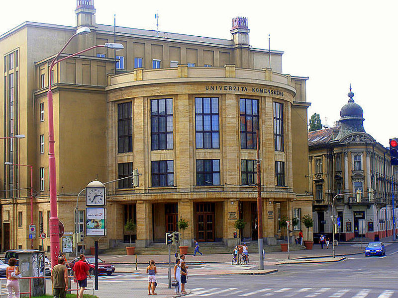

Система вищої освіти в Словаччині

На сьогоднішній день у Словаччині діють 20 державних і 10 приватних університетів. Найбільш популярними університетами для іноземних студентів по праву вважаються Університет Коменського в Братиславі, Університет Матея Бела у Банській Бистриці, Словацький технічний університет в Братиславі, Жилінський університет в Жиліні та інші. ВНЗ Словаччини забезпечують три рівні вищої освіти. Перша ступінь навчання розрахована на 3 роки і закінчується присвоєнням випускнику ступеня бакалавра (Bakalar); друга – присвоєнням після 2 років навчання ступеня магістра (Magister), інженера (Inzinier), доктора медицини (Doktor Mediciny). Третій ступінь передбачає 3-4 роки навчання і завершується присвоєнням ступеня доктора (doktor, philosophiae doctor, doktor umenia, artis doctor), аналогічний PhD. Ступені присвоюються за результатами набору студентом визначеної кількості умовних одиниць (кредитів) у відповідності до загальноєвропейської системи ECTS (European Credit Transfer and Accumulation System). Так, наприклад, для отримання ступені бакалавра необхідно набрати 180 кредитів. Громадяни України та інших країн СНД після отримання середньої освіти в своїх країнах можуть вступати вчитися до університетів Словаччини тільки на бакалавра, а після отримання диплома бакалавра, спеціаліста чи магістра у вітчизняних ВНЗ - на магістра.